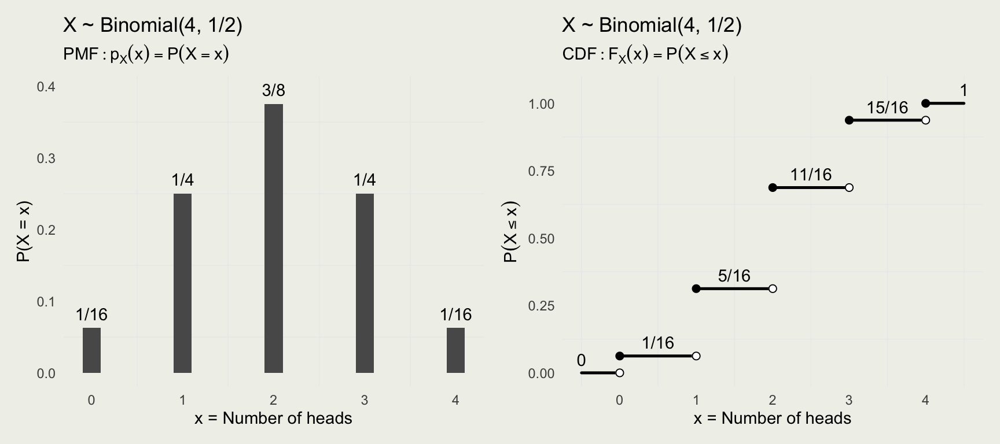
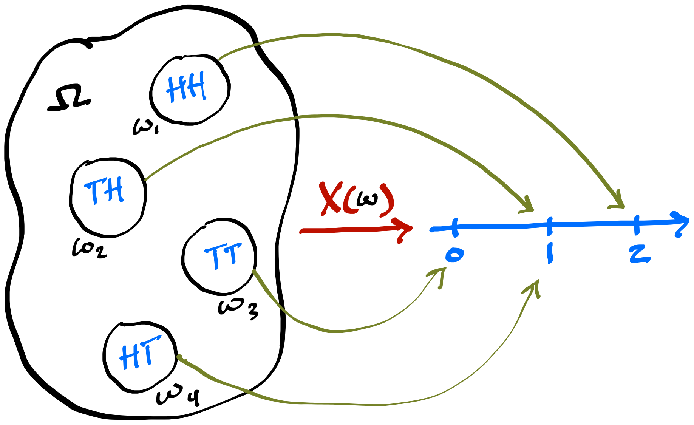
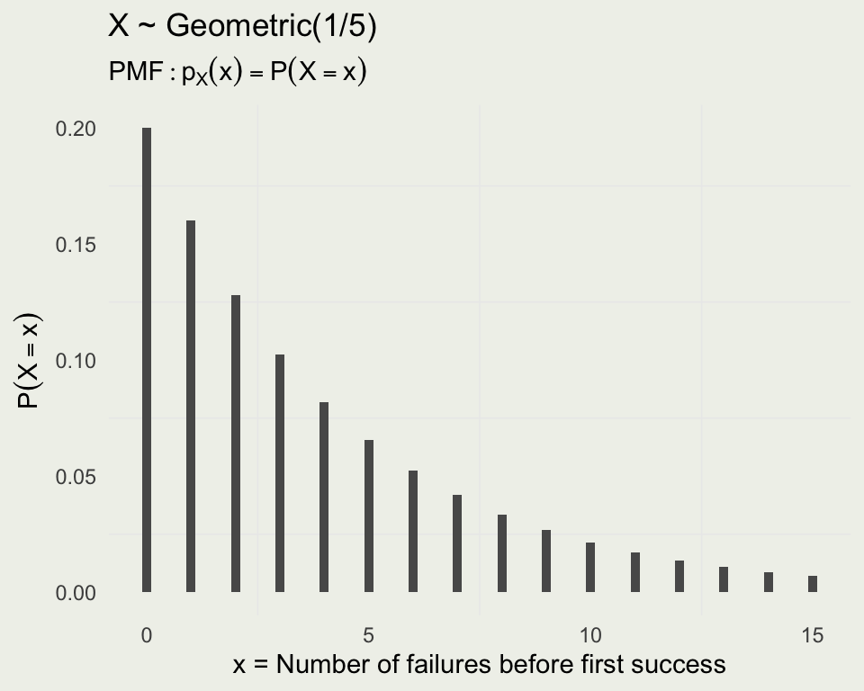
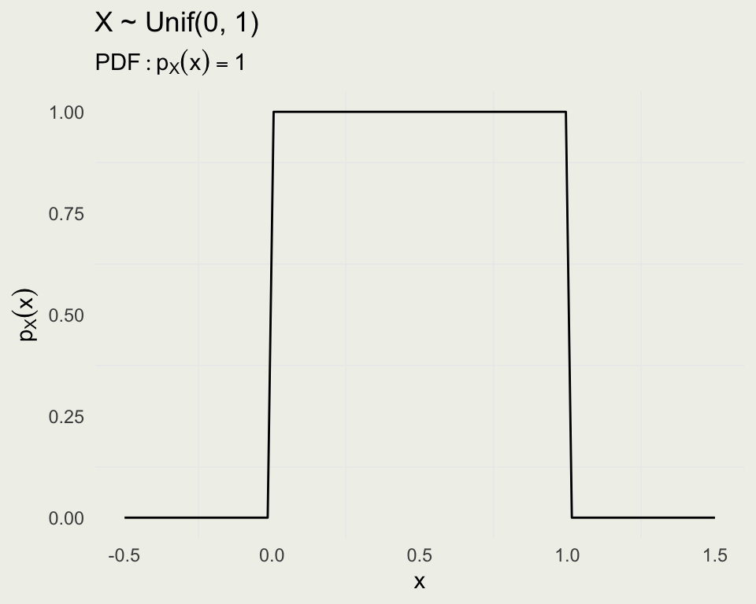
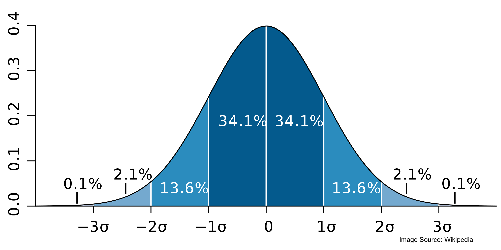
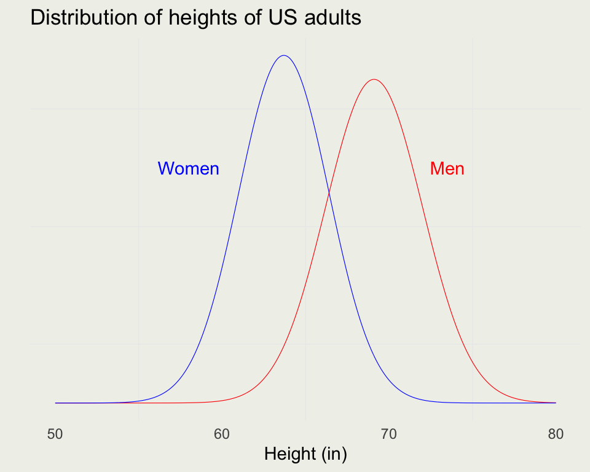
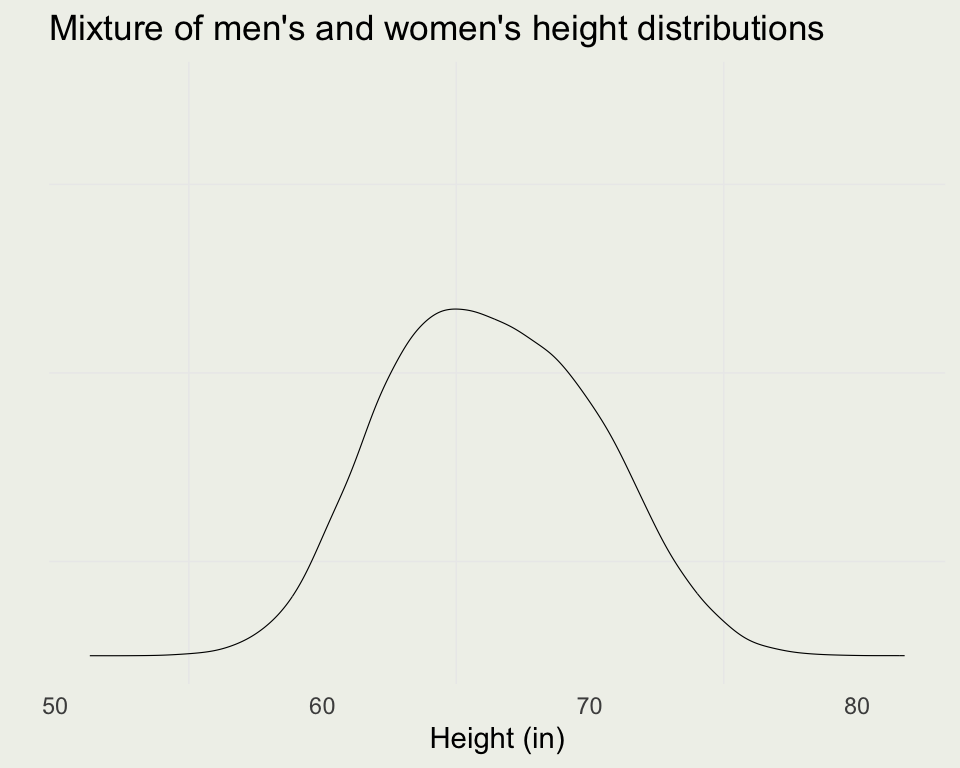

APSTA-GE 2006: Applied Statistics for Social Science Research
\[ \DeclareMathOperator{\E}{\mathbb{E}} \DeclareMathOperator{\P}{\mathbb{P}} \DeclareMathOperator{\V}{\mathbb{V}} \DeclareMathOperator{\L}{\mathscr{L}} \DeclareMathOperator{\I}{\text{I}} \]
It would be inconvenient to enumerate all possible events to describe a stochastic system
A random variable is a measurable function \(X:S\to\mathbb{R}\) that maps the sample space \(S\) into the real line
For each possible outcome \(s\in S\), the random variable assigns the value \(X(s)\)
This mapping is deterministic. The randomness comes from the experiment, not from the random variable (RV)
While \(\P(A)\) is defined for an event \(A\), \(\P(X)\) is not meaningful. The event \(\{s\in S:X(s)=x\}\) is abbreviated as \(\{X=x\}\), so we write \(\P(X=x)\)
Let \(X\) be the number of heads in two coin flips. If the outcome is \(s=HH\), then \(X(s)=2\), while \(S=\{TT,TH,HT,HH\}\)

\[ F_X(x)=\P(X\le x) \]
\[ p_X(x)=\P(X=x) \]
\[ F_X(4)=\P(X\le4) =\sum_{\substack{t\in\operatorname{supp}(X)\\t\le4}}p_X(t). \]
In R, PMFs and PDFs start with d. For example, dbinom() evaluates the binomial PMF and dnorm() evaluates the normal PDF
CDFs start with p; examples include pbinom() and pnorm()
Quantile functions are generalized inverses of CDFs. In R they start with q; for example, qbinom()
Random number generators start with r; an example is rbinom()
A binomial RV, defined below, represents the number of successes in \(N\) trials. In R, its PMF is dbinom() and its CDF is pbinom()
Here is the full function signature: dbinom(x, size, prob, log = FALSE)
x is the number of successes, size is the number of trials \(N\), prob is the success probability \(\theta\), and log requests probabilities on the log scaleA Bernoulli RV represents one trial with a fixed probability of success, such as obtaining heads
If \(X\sim\operatorname{Bernoulli}(\theta)\) with \(0\le\theta\le1\), its support is \(\{0,1\}\)
If \(X_1,\ldots,X_N\) are independent Bernoulli RVs with the same success probability \(\theta\), then \(X=\sum_{i=1}^{N}X_i\sim\operatorname{Binomial}(N,\theta)\)
\[ p_X(x)=\left\{ \begin{array}{ll} \theta & \text{if }x=1,\\ 1-\theta & \text{if }x=0. \end{array} \right. \]
\[ p_X(x)=\binom{N}{x}\theta^x(1-\theta)^{N-x}, \qquad x\in\{0,1,\ldots,N\}. \]
\(X\sim\operatorname{Binomial}(N=4,\theta=1/2)\)

library(patchwork)
library(MASS)
N <- 4 # Number of trials; x is the number of successes
# compute and plot the PMF
pmf <- dbinom(x = 0:N, size = N, prob = 1/2)
d <- data.frame(x = 0:N, pmf)
p1 <- ggplot(d, aes(x, pmf))
p1 <- p1 + geom_col(width = 0.2) +
geom_text(aes(label = fractions(pmf)), nudge_y = 0.02) +
ylab("P(X = x)") + xlab("x = Number of heads") +
ggtitle("X ~ Binomial(4, 1/2)",
subtitle = expression(PMF: p[X](x) == P(X == x)))
# compute and plot the CDF
x <- seq(-0.5, 4.5, length.out = 500)
cdf <- pbinom(q = x, size = N, prob = 1/2)
d <- data.frame(x, cdf)
dd <- data.frame(x = seq(-0.5, 4.5, by = 1), cdf = unique(cdf), x_empty = 0:5)
closed <- data.frame(x = 0:N, cdf = pbinom(0:N, size = N, prob = 1/2))
p2 <- ggplot(d, aes(x, cdf))
p2 <- p2 + geom_point(size = 0.2) +
geom_text(aes(x, cdf, label = fractions(cdf)), data = dd, nudge_y = 0.05) +
geom_point(aes(x_empty, cdf), data = dd[-6, ], size = 2, color = "white") +
geom_point(aes(x_empty, cdf), data = dd[-6, ], size = 2, shape = 1) +
geom_point(aes(x, cdf), data = closed, size = 2) +
ggtitle("X ~ Binomial(4, 1/2)",
subtitle = expression(CDF: F[X](x) == P(X <= x))) +
ylab(expression(P(X <= x))) + xlab("x = Number of heads")
p1 + p2[1] 5/16 [1] 0 0 1/32 5/32 5/16 5/16 5/32 1/32 0 0[1] 1[1] 13/16 [1] 0 0 1/32 3/16 1/2 13/16 31/32 1 1 1 [1] 0 0 1/32 3/16 1/2 13/16 31/32 1 1 1Suppose the probability of success is \(1/3\) and \(N=10\). What is the probability of 6 or more successes? Compute it from the PMF first, then verify it with the CDF.
\[ \begin{align} \sum_{x = 0}^{\infty} \theta (1 - \theta)^x = \theta \sum_{x = 0}^{\infty} (1 - \theta)^x \\ \text{Let } u = 1 - \theta \\ \theta \sum_{x = 0}^{\infty} u^x = \theta \frac{1}{1-u} = \theta \frac{1}{1-1 + \theta} = \frac{\theta}{\theta} = 1 \end{align} \]

For \(|u|<1\), let \(S\) denote the infinite geometric series. Multiplying by \(u\) shifts every term one position:
\[ \begin{aligned} S &= 1+u+u^2+u^3+\cdots,\\ uS &= \phantom{1+{}}u+u^2+u^3+\cdots. \end{aligned} \]
Subtracting the second line from the first cancels the infinite tail:
\[ S-uS=1 \quad\Longrightarrow\quad \boxed{S=\frac{1}{1-u}}. \]
\[ \E(X) = \sum_{x=0}^{\infty} x \theta (1 - \theta)^x = \frac{1-\theta}{\theta} \]
In particular, for \(X\sim\operatorname{Geometric}(1/5)\), what is the expected number of failures before the first success?
The answer is \(4 = \frac{(1 - \frac{1}{5})}{\frac{1}{5}}\)
Question: The geometric support is unbounded, yet summing only through 100 gives the analytic answer at the displayed precision. Why?
The geometric PMF decays quickly, so the omitted tail is negligible for these choices of \(\theta\)
Without doing any calculations, what is \(\E(X)\) when \(X\sim\operatorname{Geometric}(1/8)\)?
If \(X\sim\operatorname{Bernoulli}(\theta)\), then \(\E(X)=\sum_{x=0}^{1}x\theta^x(1-\theta)^{1-x}=\theta\)
For \(X\sim\operatorname{Binomial}(N,\theta)\), write \(X\) as a sum of \(N\) iid Bernoulli RVs. Each has expectation \(\theta\), so \(\E(X)=N\theta\)
This uses linearity of expectation: \[ \E(X_1+\cdots+X_N) =\E(X_1)+\cdots+\E(X_N) =N\theta. \]
\[ \E(W)=\sum_{n=1}^{\infty}\P(N=n)2^n =\sum_{n=1}^{\infty}\frac{1}{2^n}2^n =\sum_{n=1}^{\infty}1 =\infty \]
\[ \E[U(W)] =\sum_{n=1}^{\infty}\frac{1}{2^n}\log_2(2^n) =\sum_{n=1}^{\infty}\frac{n}{2^n} =2<\infty \]
\[ \I_A(s) = \I(s \in A) = \left\{\begin{matrix} 1 & \text{if } s \in A \\ 0 & \text{if } s \notin A \end{matrix}\right. \]
Recall from Lecture 1. Sample iid points uniformly from the square, so each \(X_i\) and \(Y_i\) is uniform on \((-1,1)\) and the two coordinates are independent:
\[ \pi\approx\frac{4}{N}\sum_{i=1}^{N}\I(X_i^2+Y_i^2<1). \]
[1] 0.3125 [1] 4 4 2 3 2 3 3 3 2 0 3 0 3 3 2 4 1 2 2 0 4 4 2 3 4 2 2 3 0 2 [1] 0 0 1 0 1 0 0 0 1 0 0 0 0 0 1 0 0 1 1 0 0 0 1 0 0 1 1 0 0 1[1] 0.312703\[ \begin{aligned} \E[g(X)]&=\int_{-\infty}^{\infty}g(x)f_X(x)\,dx &&\text{(continuous)},\\ \E[g(X)]&=\sum_x g(x)p_X(x) &&\text{(discrete)}. \end{aligned} \]
var() and sample standard deviation with sd()[1] 29.85[1] 5.91[1] 35.76[1] 35.77[1] 0.01[1] 35.77[1] 36\[ \sum_{x=0}^{\infty}\frac{\lambda^x e^{-\lambda}}{x!} =e^{-\lambda}\sum_{x=0}^{\infty}\frac{\lambda^x}{x!} =1 \]

\[ \begin{aligned} \P(a<X<b)&=\int_a^b f_X(x)\,dx,\\ F_X(x)&=\int_{-\infty}^{x}f_X(u)\,du. \end{aligned} \]
If \(X\sim\operatorname{Uniform}(\alpha,\beta)\) with \(\alpha<\beta\), its PDF is
\[ f_X(x)= \begin{cases} \dfrac{1}{\beta-\alpha}, & \alpha\le x\le\beta,\\[4pt] 0, & \text{otherwise}. \end{cases} \]
\[ \E(Y)=\int_0^1 y(x)f_X(x)\,dx \]
\[ y(x)= \begin{cases} 1-x, & 0\le x\le1/2,\\ x, & 1/2<x\le1. \end{cases} \]
\[ \begin{aligned} \E(Y) &=\int_0^{1/2}(1-x)\,dx+\int_{1/2}^{1}x\,dx\\ &=\left[x-\frac{x^2}{2}\right]_0^{1/2} +\left[\frac{x^2}{2}\right]_{1/2}^{1}\\ &=\frac34. \end{aligned} \]
\[ f_X(x)=\frac{1}{\sqrt{2\pi}\,\sigma} \exp\!\left[-\frac12\left(\frac{x-\mu}{\sigma}\right)^2\right]. \]
\[ Z=\frac{X-\mu}{\sigma}\sim\operatorname{Normal}(0,1), \qquad f_Z(z)=\frac{1}{\sqrt{2\pi}}e^{-z^2/2}. \]

mu_m <- 69.1 # mean height of US men in inches
sigma_m <- 2.9 # corresponding standard deviation
mu_w <- 63.7 # mean height of US women in inches
sigma_w <- 2.7 # corresponding standard deviation
x <- seq(50, 80, length.out = 1e3)
pdf_m <- dnorm(x, mean = mu_m, sd = sigma_m)
pdf_w <- dnorm(x, mean = mu_w, sd = sigma_w)
p <- ggplot(data.frame(x, pdf_m, pdf_w), aes(x, pdf_m))
p <- p + geom_line(linewidth = 0.2, color = "red") +
geom_line(aes(y = pdf_w), linewidth = 0.2, color = "blue") +
xlab("Height (in)") + ylab("") +
ggtitle("Distribution of heights of US adults") +
annotate("text", x = 73.5, y = 0.10, label = "Men", color = "red") +
annotate("text", x = 58, y = 0.10, label = "Women", color = "blue") +
theme(axis.text.y = element_blank(),
axis.ticks.y = element_blank())
print(p)
set.seed(2006)
n_m <- as.integer(1e5 * 0.48)
n_w <- as.integer(1e5 * 0.52)
h_m <- rnorm(n_m, mu_m, sigma_m)
h_w <- rnorm(n_w, mu_w, sigma_w)
h <- c(h_m, h_w)
p <- ggplot(data.frame(h), aes(x = h))
p + geom_density(linewidth = 0.2, bw = 0.5) +
xlab("Height (in)") + ylab("") + ylim(0, 0.15) +
ggtitle("Mixture of men's and women's height distributions") +
theme(
axis.text.y = element_blank(),
axis.ticks.y = element_blank()
)
What is the probability that a randomly chosen man is taller than an independently sampled woman?
Let \(M\sim\operatorname{Normal}(\mu_m,\sigma_m)\) and \(W\sim\operatorname{Normal}(\mu_w,\sigma_w)\) be independent. Define \(Z=M-W\), so \(\P(M>W)=\P(Z>0)\)
A linear combination of independent normal RVs is normal. Means combine linearly, while variances add after squaring the coefficients
\[ \begin{aligned} Z&\sim\operatorname{Normal}\!\left( \mu_m-\mu_w,\sqrt{\sigma_m^2+\sigma_w^2} \right),\\ \E(Z)&=\mu_m-\mu_w=69.1-63.7=5.4,\\ \V(Z)&=\sigma_m^2+\sigma_w^2=2.9^2+2.7^2=15.7,\\ \operatorname{sd}(Z)&=\sqrt{15.7}\approx3.96,\\ Z&\sim\operatorname{Normal}(5.4,\sqrt{15.7}), \qquad \sqrt{15.7}\approx3.96. \end{aligned} \]
Because \(M\) and \(W\) are continuous, \(\P(M=W)=0\). Therefore,
\[ \P(W>M)=1-\P(M>W)\approx0.09. \]